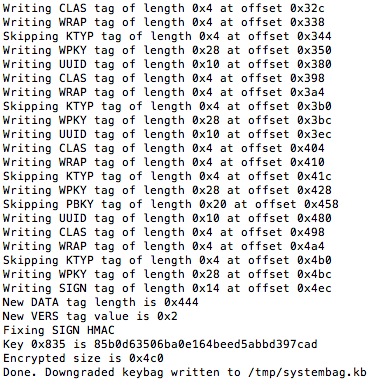

iOS 4 Dualboot
Huge thanks to @JonathanSeals for fixing my grammar/fact mistakes!Important note: the information below is given for educational purposes. Currently this is hell to implement, dangerous and unstable. Also it currently works with iOS 4.3.x only. Follow these instructions at your own risk. Don't read it unless you have made sure that you understand everything in my original guide!
iOS 4 dualboot was known as something nearly-impossible for quite a long time
The problem was that in 2011 with the release of iOS 5, Apple introduced LwVM - Lightweight Volume Manager - a new type of partition table and corresponding kernel extension. The LwVM kext reads partition table and converts it to a “fake” GPT published at /dev/disk0s1. This fake GPT is like a middle layer between system services (or you) and the real partition table published on /dev/disk0. When you rewrite the GPT on disk0s1, LwVM immediately detects that, checks the GPT’s validity, and if it’s alright, LwVM converts to its own partition table format and writes it back to disk0. This makes the partitioning process much easier and safer. That’s one of the reasons why Apple added LwVM support to kernel (it was in iBoot since iOS 4.2) the same time they added OTA updates (OTA update process involves creation of a new partition (also known as Upgrade partition) for storing the bootchain used for upgrading)
Unfortunately, iOS 4.x doesn’t support LwVM at the kernel level. Which kind of partition table does it use? Just good old GPT
Then how are we going to overcome that? Maybe create hybrid partition table on disk0? This might be a good idea! Our base iOS (5+) will use LwVM, second iOS (4.x) will use GPT and we’re happy, right?
Wrong! LwVM lays at 0x0 to 0x1000, GPT lays at 0x2000 to 0x8000, so they don’t overwrite each other, but the problem is that when modern (5+) iOS kernel detects both partition tables on disk0, it uses GPT instead of LwVM
Yes, iOS 5+ doesn’t necessarily need LwVM as partition table, it still supports good old GPT
Maybe we can convert LwVM to GPT? Sure we can, but LwVM isn’t just a partition table and kext which handles it, LwVM is also a part of the iOS data-protection model. That means, after you write GPT over LwVM, your base iOS most likely will die with awful pain. By the way, LwVM always traps write operations to disk0, and if you’re writing some nonsense (when disk0 contains LwVM table, valid GPT is considered as nonsense), it will undo your changes. Also, disk0 isn’t available for writing if any partition was mounted, so you can write to disk0 only in a ramdisk environment
We can’t create a hybrid LwVM+GPT table, we can’t convert GPT to LwVM, the only thing we can do is make the restore daemon format our NAND as GPT instead of LwVM
use-lwvm property
Those who have patched the DeviceTree to disable use of Effaceable Storage probably noticed the use-lwvm property in it. Luckily for us, the kernel and its' extensions don’t care about this property, only restored_external relies on it. If it detects use-lwvm, it formats NAND as LwVM, if it doesn’t, it formats as GPTCreating custom firmware
iOS firmware for devices without personlized baseband firmware
Patch out signature checks in iBSS and iBEC, clone DeviceTree and replace use-lwvm with any other string of same length. Replace path to RestoreDeviceTree in BuildManifestImportant note: iBoot32Patcher fails to patch signature checks in iBoot Stage 2 (iBEC/iBoot) for iPhone 3GS for iOS 6.x. That's why I provide a patch for 6.1.6 iBEC here. Also, iPhone 3GS (iPod touch 3 probably too) experiences problems with multi_kloader. I highly recommend to use NOR-flashing method to untether and flash patched iBEC (read below about how to do it)
iOS firmware for devices with personalized baseband firmware
This is only iPhone 4 (if we're talking about iOS 4 compatible devices). For some unobvious reason, restored_external (at least on 7.1.2) refuses to update the baseband firmware when DeviceTree is custom. That means we’re unable to create custom firmware as easily as we can for other devices since we should also patch the options plist in the restore ramdisk in order to disable the baseband upgrade. But since we modify the ramdisk, we now have to decrypt the root filesystem image, and since we decrypt the filesystem, we now have to patch ASR, and since we have to patch ASR, we have to deal with AMFI. Luckily for us, there are iOS 7.1.2 xpwn bundles for iPhone3,1 and 3,3 in Odysseus (not for 3,2 though, but it doesn’t support iOS 4 anyway). Patch IPSW using xpwn and perform same manipulations with DeviceTree as if you’d created CFW for other device. Restore process of such CFW with original idevicerestore will most likely fail on early stage (have no idea why currently, iBSS doesn't jump to iBEC). Use @xerub’s fork from Odysseus or special hack:- Patch signature checks in iBSS and pack it into an encrypted Img3
- In iBEC from custom IPSW (Img3, no need to repack) replace 00 00 00 40 at offset 0x41AA8...
...by 71 11 F0 5F:
This patch is required because otherwise iBEC won't be able to jump to other iBEC (idevicerestore always sends iBEC if detects device in recovery mode, even if it's iBEC already). Odysseus's iBECs have patched pointer to go command (it prepares and executes images sent through USB), this is made to dump blobs - user sends payload and go command, and since pointer to this command has value of load address now, device executes code from load address where payload is stored after sending through USB. We changed go pointer to its original value, so jump to iBEC will be performed correctly - Now put your iPhone to DFU mode, exploit with limera1n, send patched iBSS, send iBEC you've just replaced 4 bytes in
- Restore should now start correctly:
idevicerestore -e IPSW
Jailbreaking
Disabling use of LwVM causes changing standard BSD name for partition device nodes. When with LwVM, they are /dev/disk0s1s1, /dev/disk0s1s2, /dev/disk0s1s3 and so on, but since with GPT as real table (disk0) we lose fake GPT (disk0s1) as middle layer between real table and partitions, System-partition will be called disk0s1 and Data will be... disk0s2s1. This must be strange to you, but we’ll talk about it later (this is related to EMF — part of data-protection model)Unluckily for us, different BSD names of disks cause a lot of problems with jailbreak. Both p0sixspwn and Pangu 7 fail sooner or later step. That means we have to use something else to jailbreak device
iOS 6
Pretty easy case. Download latest redsn0w and iOS 6.0 IPSW for your device (this is no mistake, you should download exacty this version). Jailbreak device. Unfortunately, redsn0w messes fstab. Instead of removing unwanted options of mounting second partition, it simply removes original fstab and copies new one. I highly that developers behind redsn0w could expect that someone will use GPT on iOS 5+, and that’s why redsn0w’s fstab contains /dev/disk0s1s1 and /dev/disk0s1s2 instead of /dev/disk0s1 and /dev/disk0s2s1. Using SSH ramdisk (or something else) manually fix fstab and perform tethered boot using redsn0w. You may now install p0sixspwn untether from CydiaiOS 7
Much, much harder. There is no redsn0w for iOS 7. There is opensn0w though, but its implementation of limera1n makes my iPhone 4 reboot, so I’m unable to use itFirst of all, download OS X version of Pangu 7.1 and jtool
If you look inside Pangu's .app container you won't see almost anything, but binary and app icon. To make scammer's lives a little bit harder, developers packed all resources (graphics, IPA for injection, tarballs, etc.) rigth into Mach-O executable. Let's look into its structure:
jtool -l path_to_pangu_executable
All stuff we need is stored in highlighted areas. Let's extract them:
jtool -e __TEXT.__objc_cons3 path_to_pangu_executable
jtool -e __TEXT.__objc_cons5 path_to_pangu_executable
jtool -e __TEXT.__objc_cons6 path_to_pangu_executable
jtool -e __TEXT.__objc_cons7 path_to_pangu_executable
Resulting files are also ZIPed, let's unzip and rename them:
gunzip pangu.__TEXT.__objc_cons3 -S .__objc_cons3 -k
mv pangu.__TEXT panguaxe.tar
gunzip pangu.__TEXT.__objc_cons5 -S .__objc_cons5 -k
mv pangu.__TEXT Cydia.tar
gunzip pangu.__TEXT.__objc_cons6 -S .__objc_cons6 -k
mv pangu.__TEXT APT.tar
gunzip pangu.__TEXT.__objc_cons7 -S .__objc_cons7 -k
mv pangu.__TEXT panguaxe-APT.tar
We have to make tiny patches for untether binary. On startup it remounts /dev/disk0s1s1, but since we our System-partition called /dev/disk0s1, untether would fail. Let's fix that - first unpack tarball:
mkdir ./panguaxe
tar -xvf panguaxe.tar -C panguaxe
Extract entitlements:
jtool --ent -arch armv7 panguaxe/panguaxe > ent.plist
In hexadecimal editor find two /dev/disk0s1s1 strings:
...and replace 73 31 bytes by 00 00 bytes:
Save result and re-sign binary with entitlements:
ldid -S/Users/noname/ent.plist /Users/noname/panguaxe/panguaxe
Now we need to extract tarballs to device from ramdisk environment. Please pay attention to the way partitions should be mounted - first mount /dev/disk0s1 to /mnt1, then mount /dev/disk0s2s1 on private/var inside /mnt1:
Send all tarballs we extracted from pangu7 Mach-O and patched untether binary to device (ramdisk doesn't have enough space, so send to /mnt1/private/var). Extract tarballs:
tar -x --no-overwrite-dir -f /mnt1/private/var/panguaxe.tar -C /mnt1
tar -x --no-overwrite-dir -f /mnt1/private/var/Cydia.tar -C /mnt1
tar -x --no-overwrite-dir -f /mnt1/private/var/APT.tar -C /mnt1
tar -x --no-overwrite-dir -f /mnt1/private/var/panguaxe-APT.tar -C /mnt1
Important note: use exactly same options of tar as I do
Remove untether:
rm -rf /mnt1/panguaxe
...and replace with patched one:cp -a /mnt1/private/var/panguaxe /mnt1
Create panguaxe.installed files:
touch /mnt1/panguaxe.installed
touch /mnt1/private/var/mobile/Media/panguaxe.installed
Remove ,nosuid,nodev from fstab:
Add SBShowNonDefaultSystemApps property of type boolean to /var/mobile/Library/Preferences/com.apple.springboard.plist with value YES
Reboot device. Cydia should appear on SpringBoard
Preparing RootFS
Process is literally same as with iOS 6 dualbootPartitioning
Partitioning is entirely different. I wrote tiny tool for that — TwistedMind2 (“2” because first one was designed to create hybrid partition table). Usage is quite simple:TwistedMind2 -d1 <new_size_of_first_data> -s2 <size_of_new_system> -d2 <size_of_new_data | max>
- -d1 — new size of your first system’s Data partition. Note that TwistedMind2 will immediately resize Data partition’s HFS to this value. Must be multiple of 8192 (blocksize)
- -s2 — size of System partition for second system. Must be equal to capacity of RootFS or greater and multiple of 8192 (blocksize)
- -d2 — size of Data partition for second system. Use “max” here and program will automatically calculate maximal possible size. Must be multiple of 8192 (blocksize)
- --emf — this option gives EMF GUID to second Data partition. In this case, volume will be encrypted with EMF key and its dev node will be called disk0s4s1 (disk0s4 will exist too, but contain data in encrypted state). I’m not currently sure whether it’s somehow useful, so you may not use it
TwistedMind2 -d1 3221225472 -s2 879124480 -d2 max
Unluckily, /dev/disk0 isn’t available for writing if partitions were mounted already. That’s why TwistedMind2 simply saves resulting GPT to file (/TwistedMind2-XXXXXXXX where XXXXXXXX is CRC32 sum of GPT header). Download this file to your computer and boot to ramdisk and write this file to /dev/disk0 using dd:
dd if=TwistedMind2-XXXXXXXX of=/dev/rdisk0 bs=8192
You may either use msft_guy’s ssh_rd or build your own which will just write your new GPT (in this case, you should add tiny delay before calling dd, because dev nodes usually aren’t initialized when rc.boot starts its execution)Important note: there must NOT be even one reboot between running TwistedMind2 and writing GPT from ramdisk environment, because iOS will most likely resize Data’s HFS to its original size if there’s no other partition after it. If you made such mistake, run TwistedMind2 one more time
Check your new disks:
ls -la /dev/disk*
If /dev/disk0s3 and /dev/disk0s4 (or also /dev/disk0s4s1 if --emf option was chosen) appeared, partitioning is done properly
Restoring RootFS
Absolutely same as for iOS 6 with exception of that you have to use different device nodes when you work with newfs_hfsModifying filesystems
This process is different a little bit for iOS 4First unmount disk0s4 if it was mounted. Then regenerate it without ‘-P’ flag. Mount both disk0s3 and disk0s4. Move /private/var/* to second Data:
mv -v /mnt1/private/var/* /mnt2
Create folder for system keybag on /mnt2:
mkdir /mnt2/keybags
NoMoreSIGABRT disk0s4
After that this partition should be correctly mounted on both systems. For some reason when you generate HFS with ‘-P’ flag iOS 4 refuse to mount it, but if you create unprotected volume first and then convert it, both system should work properly with it. I haven’t deeply investigated this thing yet, so I recommend not to use it for first time and leave second Data unprotectedNow fix fstab
nano /mnt1/etc/fstab
Replace disk0s1 by disk0s3, and disk0s2 by disk0s4 (or disk0s4s1 if you have EMF enabled)Fix system keybag
Unfortunately, truly unfortunately, but no-effaceable-storage isn’t an option on iOS 5 and older. That means we have to copy system keybag from first system to second one. This doesn’t seem difficult for the first look, but the problem is that keybags had been changing in time, and that’s why keybag from newer OS may be incompatible with older OS. Here is a list of known keybag versions:- Version 1: iOS 4.0-4.2.x
- Version 2: iOS 4.3.x
- Version 3: iOS 5.x-6.x
- Version 4: iOS 7.x-9.0.x (maybe newer iOS versions still have this keybag version, but latest one I personally looked into was 9.0.0)
fixkeybag [-v2] [key 0x835]
- No arguments provided: fixkeybag generates new keybag, but only if it doesn't exist at /private/var/keybags/systembag.kb
- -v2: takes current system keybag and downgrades it to 2nd version by cutting new unsupported tags (KTYP and PBKY)
- use your key 0x835 as third argument along with -v2 to avoid kernel patching every time you downgrade keybag. We'll talk about kernel patching, keys and why we should care about them below
ttbthingy

Now you may feel free to run fixkeybag with -v2 option. In the end it will print your key 0x835. Save it somewhere. Downgraded keybags are saved to /tmp/systembag.kb
fixkeybag -v2
Copy it to /mnt2/keybags:
cp -a /tmp/systembag.kb /mnt2/keybags
Now you may feel free to unmount both partitions:
umount /mnt1 /mnt2
Patching bootchain
iBSS
In iOS 4 iBSS was Stage 2 bootloader too. That means it had recovery shell, received commands, was able to boot kernel (along with ramdisk and DeviceTree surely). This is not what we need, so I recommend to take iOS 5+ iBSS instead and patch in the same way as described in Part 5iBEC
For some unobvious reason, Apple included OTA routines in iOS 4.2+, but only on bootloader level. This is delight for usFirst of all decrypt your iBEC:
xpwntool iBEC iBEC.dec -k key -iv iv
Unfortunately @iH8sn0w's iBoot32Patcher messes iOS 4 bootloaders, so we can't use it. But luckily there is another iBoot patcher — the one from opensn0w (and iOS kexec tools). It doesn't work for me on computer, but happily works right on device:ibsspatch iBEC.dec iBEC.prepatched
Transfer resulting file back to computer
Important note: patches made by ibsspatch have different nature than patches made by iBoot32Patcher. In Part 5 I told that two Image3 tags (TYPE and DATA) are perfectly enough. But this doesn't apply to bootloaders patched by ibsspatch - every IMG3 file you use with them must have exactly same tag set this IMG3 originally has
Replace boot-args ibsspatch wrote by rd=disk0s3 -v:
OTA-routines patches
Make boot-command=upgrade and auto-boot=true patches in literaly same way you would make them for iOS 6 bootloader (described in Part 5)boot-partition patch
upgrade routines on early stages sets value of boot-partition iBoot variable to 2 (but doesn't save it to NVRAM though):But what's for? This value is then read by function I call mount_upgrade_hfs. All it does is mount partition which number is set by boot-partition variable to /boot. Since partition number's count starts with 0, 2 actually means 3rd partition
For some currently unknown reason, iBEC refuses to load any file from iOS 4 system partition. Happily loads anything from iOS 7 system partition though. That means we have to make it use first partition for Upgrade instead of third. Replace reference to 2 (yes, it's encoded as string) by reference to 0 string. You should know well ho to do it:
Bootchain (kernelcache, DeviceTree) must be stored at first partition, obviously
Skip ramdisk load
OTA update process implies booting of ramdisk. But in our case, in case of dualboot we absolutely don't need it. Furthermore ramdisk loading slows down boot process, especially on old devices. This patch isn't really necessary. Using Branch Finder replace CBZ R0, upgrade_load_ramdisk_:...by CBZ R0, upgrade_load_kernelcache_:
What you should and shouldn't do
You should downgrade keybag and copy it before every boot of second OS. Especially if you changed your passcode. To avoid kernel patching which is needed to get key 0x835, you may just pass this key as third argument to fixkeybag:fixkeybag -v2 85b0d63506ba0e164beed5abbd397cad
By the way, I'm going to add pre-boot scripting function to Way Out for automation of such processesNEVER change passcode or erase contents on second system. Such operations will cause regeneration of keys in Effaceable Storage and as result awful death to your first system